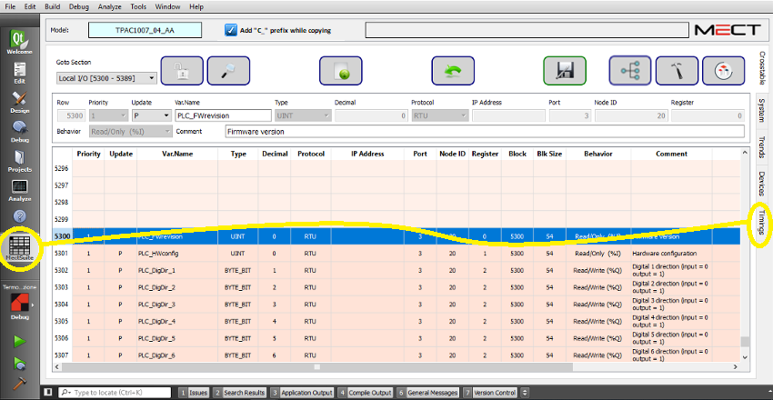
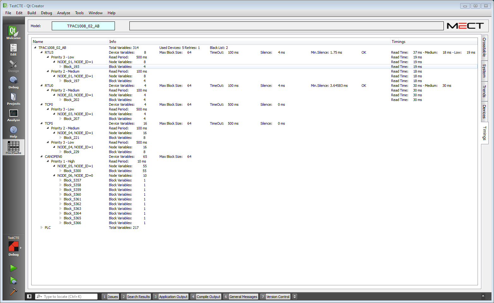

Das Fenster “Timing” gibt einen Überblick über die Zeit, die benötigt wird, um einen korrekten Werteaustausch zwischen Variablen mit RTU-Protokoll zu ermöglichen.
Um das Fenster “Timing” zu starten, siehen Sie folgende Abbildung:

Die Schnittstelle ist wie folgt:

Die Baumansicht ähnelt der Bildschirmansicht “Devices”, aber die Variablen in der Spalte Name sind gruppiert nach:
Panel → Device (Kommunikationsschnittstelle)) → Priority → Node → Block → Variables
Die Spalte Info enthält die gleichen Informationen wie das Bildschirmfenster “Devices”.
Die Spalte Timings zeigt für RTU-Protokolle die Zeit an, die benötigt wird, um das ausgewählte Element zu lesen (Device, Priority, Node, Block).